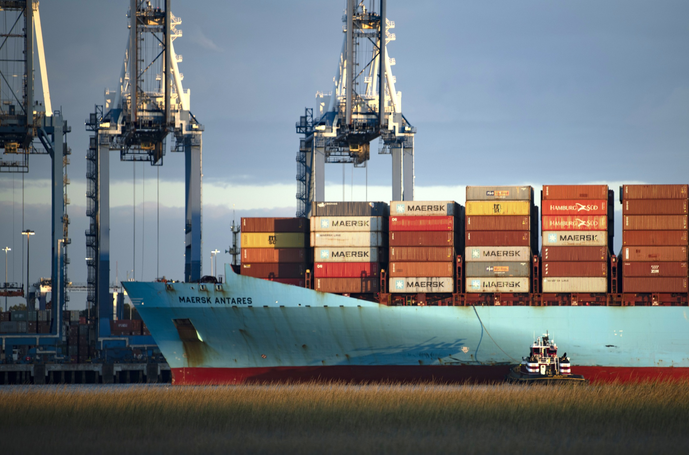
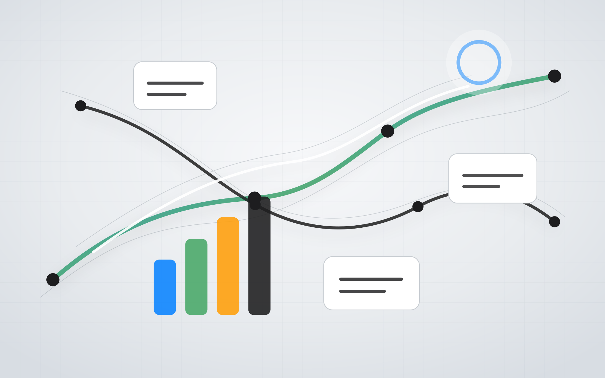
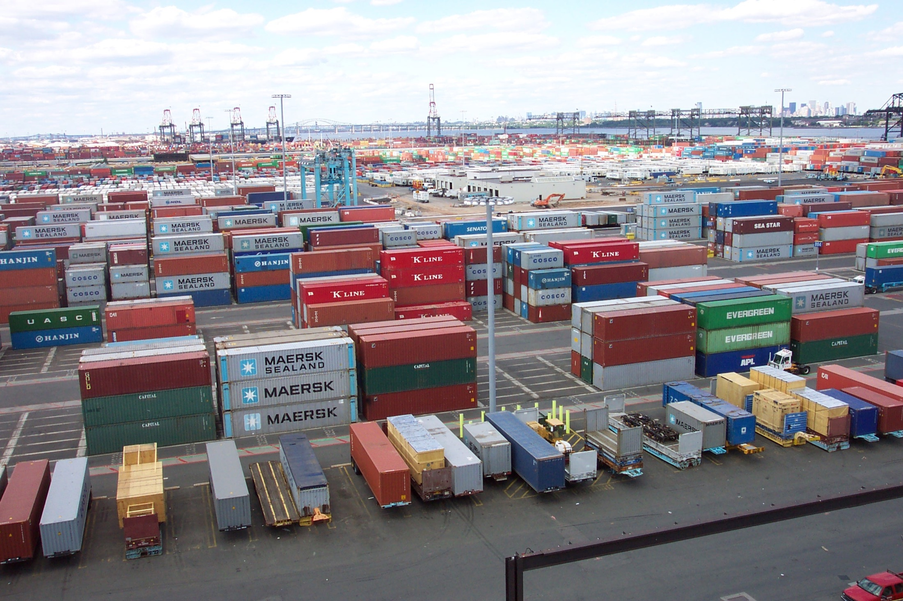
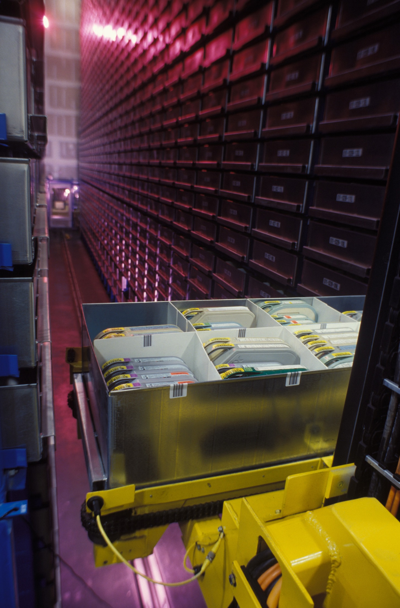

Forecasting that saves real money.
Built anomaly detection and root-cause analytics that helped avoid approximately $40M in ocean detention, demurrage, and accessorial costs.
Supply Chain Analytics | GenAI | Cloud Operations
I turn logistics complexity into decision systems: forecasting, anomaly detection, invoice intelligence, executive dashboards, and AI assistants for enterprise operations.
Highlights
Built anomaly detection and root-cause analytics that helped avoid approximately $40M in ocean detention, demurrage, and accessorial costs.
Launched a GenAI assistant for freight cost analysis, reducing analyst lookup time by approximately 60%.
Owned logistics finance accrual automation with variance tracking and SOX-aware month-end workflows.
Migrated legacy BI and ETL flows into cloud-native, validated pipelines with lineage and reusable data foundations.

Precision At Scale
Manohar connects freight movement, cost signals, invoice quality, and executive decisions into reliable operating pictures that teams can act on.
AI For Operations
For operational analytics, a useful AI system must be accurate, governed, observable, and safe to use. Manohar builds LLM workflows with validation, telemetry, retries, evaluation sets, and constraints around generated SQL.

Cloud Migration
He has built migration systems that convert proprietary BI and ETL assets into maintainable, cloud-native analytics. The value is not just migration. It is stronger validation, cleaner lineage, and data products downstream teams can trust.

Supply Chain Work
Ocean Accessorial Cost Analytics
Freight Finance Accrual
Freight Audit Intelligence
Director Premium Dashboard

Why Apple Operations And Supply Chain
Apple's supply chain work is exactly the kind of environment I want to contribute to: one where analytics is not just reporting, but a way to improve planning, fulfillment, quality, cost, and customer trust.
Technical Stack
OpenAI, Gemini, LangChain, RAG, ReAct agents, prompt engineering, agentic workflows
XGBoost, Scikit-learn, TensorFlow, PyTorch, regression modeling, time-series forecasting
GCP, BigQuery, Vertex AI, Cloud Run, Dataform, Pub/Sub, GCS
Dash, Plotly, Qlik Sense, Power BI, Tableau, Python, SQL, PySpark
Resume And Contact